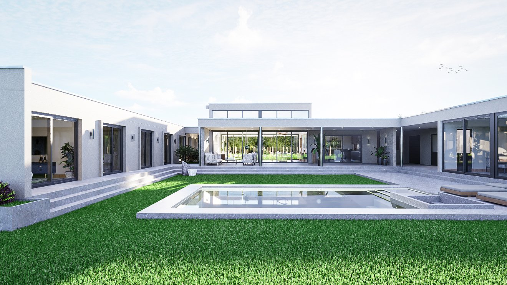
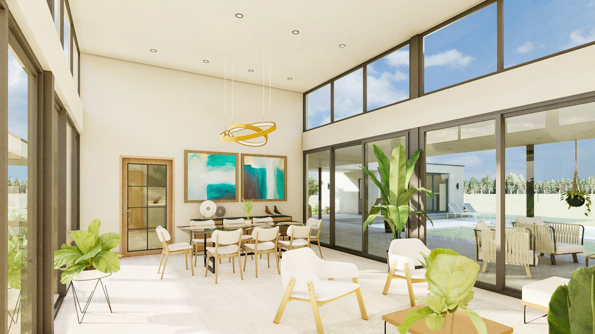
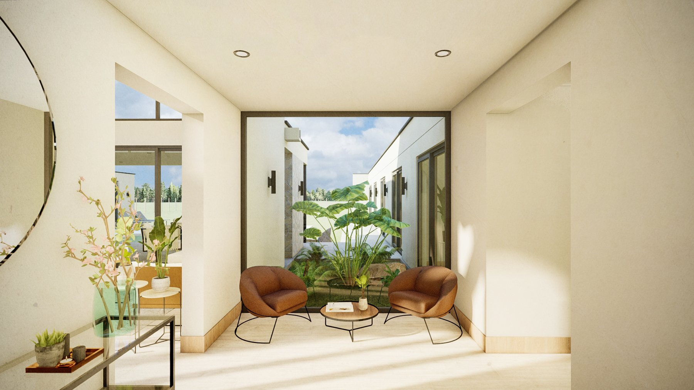
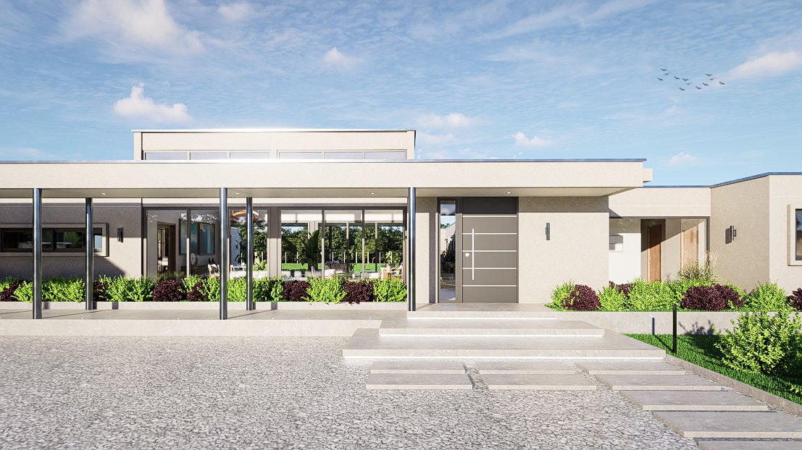

Ficha A-107 · Vivienda unifamiliar
Una casa de un piso en Flor del Llano, San Clemente, de diseño contemporáneo y minimalista, organizada en torno a un patio central con piscina y grandes ventanales hacia el paisaje.





Casa BT se emplaza en un terreno de 5.000 m² en Flor del Llano, San Clemente, y responde al encargo de una vivienda unifamiliar de un solo nivel, de 427 m², con un lenguaje contemporáneo y minimalista. El proyecto se resuelve en albañilería reforzada, con un volumen bajo y extendido que se organiza en forma de U alrededor de un patio central.
Ese patio, con piscina y zona de estar exterior, se convierte en el centro de la vida familiar y en la referencia visual desde prácticamente todos los recintos de la casa, gracias a los grandes ventanales de piso a cielo que recorren las alas del programa. Un volumen elevado sobre el cuerpo principal marca el living-comedor, con cielo de doble altura y ventanas altas que aportan luz natural indirecta durante todo el día.
Hacia el acceso, un carport techado y un recorrido de piedra laja entre jardines conducen hasta la puerta principal, resuelta con un diseño de líneas simples coherente con la sobriedad general del proyecto.